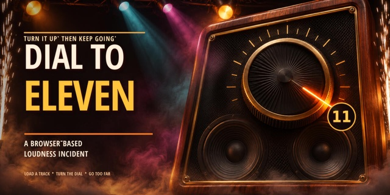

Dial to Eleven
Browser audio amp with an actual eleven

A browser-only amp for your own audio files, with a rotary dial from silence to eleven and a stage show that follows the music.
Executive summary
Why it exists
I found Spinal Tap: Break Like the Wind on the last day of a library book sale. CDs normally went for 50 cents, but this one still wore a $6.99 Ear Candy markdown sticker. I knew the band from the movie, took the CD home, and found that nothing in the house had a dial past ten.
Outcome
The live demo runs on GitHub Pages without a server or bundled recordings. Users choose their own track, and the README documents the audio safety warning and the project's book-sale origin.
My role
Concept, direction, and hands-on testing; implemented with AI coding assistance.
Technical overview
How it works
A dependency-free page loads a local audio file into a Web Audio chain for gain, compression, filtering, and saturation. A rotary dial has clickable numbers, with a deliberate jump at eleven and an optional saved More eleven setting. Audio samples drive separate cabinet, lettering, speaker, and jack motion. CSS lights and side fog follow playback; a canvas launches simulated fireballs and cold sparks only when music plays at eleven. The file never leaves the browser.
Hard parts
The stage had to stop when playback stopped, even when someone pressed Stop and Play quickly enough for old media events to arrive late. The amp also had to fit a phone screen without scrolling or clipping and honor reduced-motion settings.